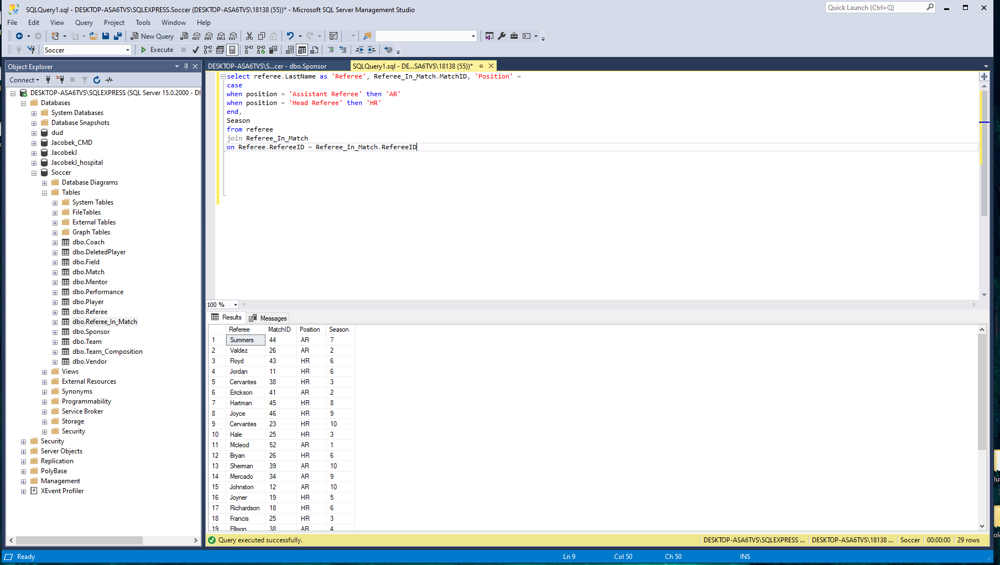

Justin Jacobek
Links to Personal Documents and Profiles
School Projects

During the fall semester of 2019, I was in the process of taking the ISM 3011 course, which focused on the systems used within business organizations. Excel was a main focus of this course, and the screenshot above is the final outcome of a grade calcualtor project that was assigned to us. The purpose of this project was to create a calculator for our grade by using a variety of different expressions and formulas that would ultimately assign your grade based on the pre-determined point scale provided to us.
Last semester I took ISM 4212, which focused on creating and maintaining SQL databases. One of the projects within the course required us to create a database for a youth soccer league, which involved adding a vast amount of information about the league into specific tables where the information would be stored. Furthermore, we would then need to run queries to find and match specific data within the database, which is whats shown above.
During my time in ISM 4220, I learned how to use tools and software that allowed me to trace data. The screenshot above demonstrates how I used the ping command in the command line environment to trace the distance in time it took for my computer to reach the golfbidder server,located in the UK, and back.
Personal Interests
- Golfing
- Magic the Gathering
- Fishing
- Video Games
- Meeting new people